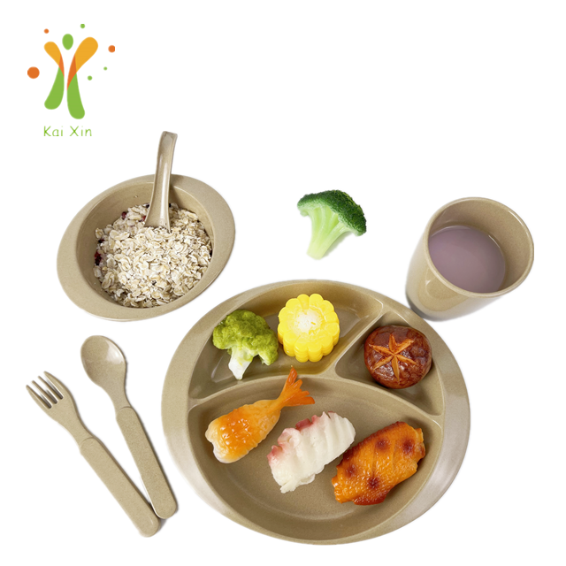
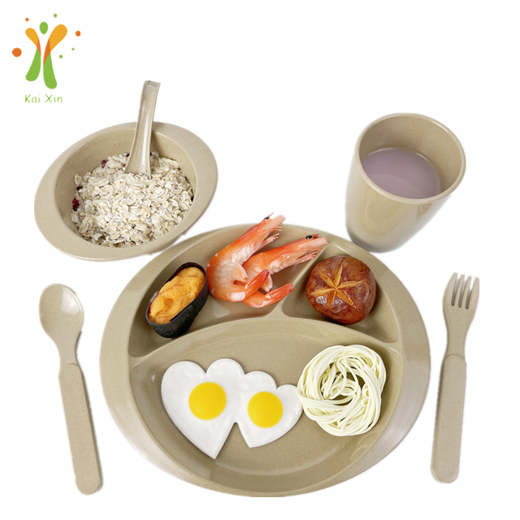

A complete rice husk tableware set designed for children: double-ear bowl, spoon, 3-compartment plate, cup and spoon-fork. Every piece is light, unbreakable and food-grade safe — perfect for weaning and everyday meals.
| Material | Natural rice husk fiber + 20% food-grade starch binder |
|---|---|
| Set includes | Double-ear bowl 250 ml / 100 g |
| Kids spoon 113 mm / 25 g | |
| 3-compartment plate 230 × 190 × 28 mm / 250 g | |
| Kids cup 200 ml / 115 g | |
| Kids spoon-fork 15 mm / 45 g | |
| Color | Natural rice-husk color (custom colors available) |
| Packaging | Custom gift / single-item box available |
| Feature | Child-safe, unbreakable, complete set |
Tell us your size, color and quantity — we'll prepare a tailored quote.
Send Inquiry